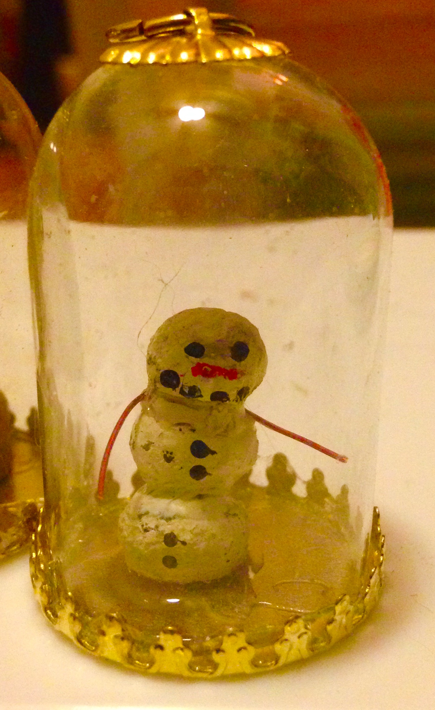
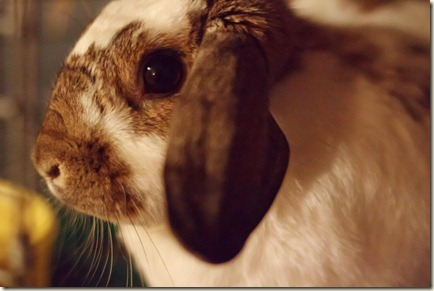
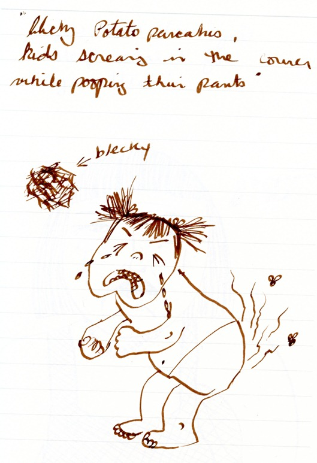

ART 101: Intro to Rabbit Poop Snowman E-course


This is EMToast University with Professor Miguel Q. Tadpool. Professor Tadpool, is 2015 "Chill Professor of the Year" for his work at Kapchaw Online University. He shares his simple how-to knowledge -- tuition free!
1. Gather rabbit feces. These round pellets can be found piled under rabbit hutches, in the corners of their cages, or outdoors in grass or moss patches in the woods.
2. Dry the feces. Place it on a paper towel on your kitchen or dining room table. Rabbit feces are sterile so don't worry if any get into your food. It's vegetables.
3. Paint the feces white with any paint you have handy and allow to dry. Even white-out will work.
4. Glue feces together. Any type of glue will work.
5. Using black paint with small brush or marker, draw the face. I suggest two horizontal dots for eyes on the top pellet and 4 dots in a smile shape directly below that.
6. Next take an orange marker or small brush with orange paint and make a diagonal line for a nose. You have created the face.
7. Next make 2 vertical black dots on each of the lower feces with brush or marker as the buttons.
8. For the arms get creative. You can paint a toothpick red, use a coffee stirrer, or a red wire, even string. Just glue in place to the sides/top of the middle feces.
9. Finally glue the snowman to a small coin sized disk to help it stand. You can even use a real coin such as a penny.
Come back for my next level E-course ART 201: Advanced Rabbit Poop Snowman E-course to find out how to make the ornament pictured!
Congratulations on passing ART 101: Intro to Rabbit Poop Snowman E-course and thank you for taking my class. You are an awesome learner and you got an A!
Related posts

Dell Introduces 99 cent Wireless Notebook for Back to School
Date 9/11/09 Round Rock, TX No noisy fans, dusty screen, or hot computer on your lap. The Dell Notebook is…

Rabbit: Nature's Cutest Killer
Tonight at the mall pet store I overheard a woman saying, “Rabbit, your nails are like hypodermic needles. My arm!”…


“Dead Rabbit” Dr. Denys Committing Innocent Girl
A Denver woman who believed her daughter to be suffering from bi-polar disorder attempted to have her committed to St.